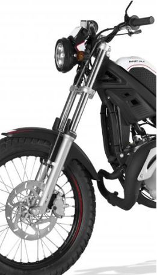

BALAZTAK
Aurreko balazta: Brembo AJP modeloa da, eta 220 mm-ko disko bati eragiten dio. Balazta mota hau oso eraginkorra da, motorarren pisu txikia dela eta.

Atzeko balazta: Aurreko balaztaren marka bera da, baita modeloa ere. Diskoaren tamaina da aldatzen dena, 220 mm-tik 200-era. Tamaina aldaketa hau gurpilaren tamainaren aldaketarengatik gauzatzen da. Gurpila handiago, diskoa handiago; gurpila txikiagoa, diskoa ere txikitzen da.
| Modeloa eta marka | Sistema | Diskoaren diametroa | Diskoaren pinza | |
| Aurreko balazta | Brembo AJP | Disko bidezkoa | 220 mm | Pistoi batekoa |
| Atzeko balazta | Brembo AJP | Disko bidezkoa | 200 mm | Pistoi batekoa |